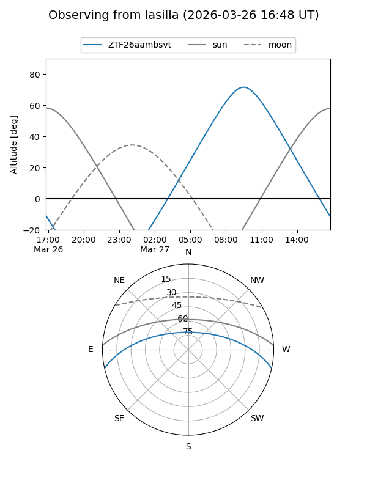
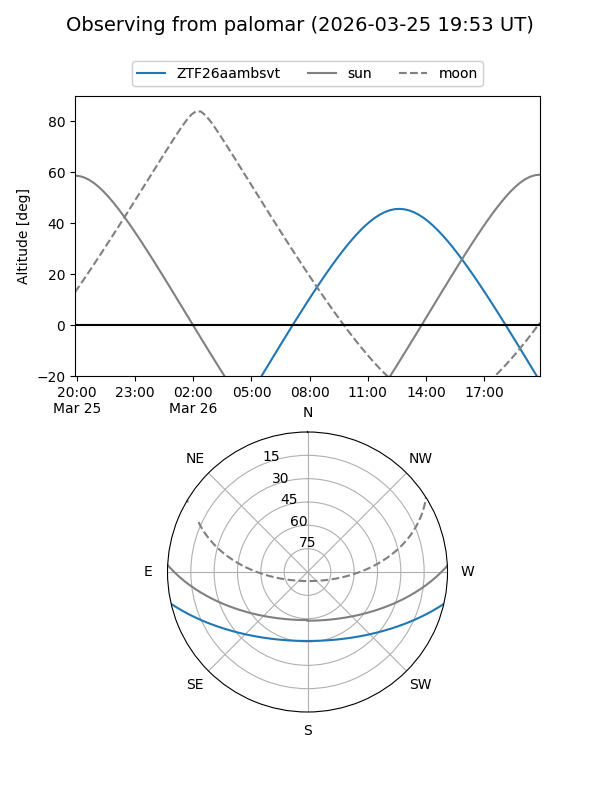
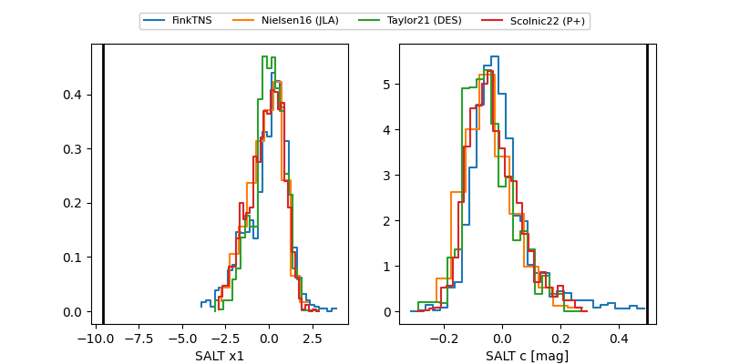

ZTF26aambsvt
Target ZTF26aambsvt at 2026-03-26 14:11
Aliases and brokers:
FINK: link
Lasair: link
ALeRCE: link
alt names
ZTF26aambsvt (ztf,fink_ztf)
Coordinates:
equatorial (ra, dec) = 256.0805,-10.94696
equatorial (HMS+DMS) = 17:04:19.32,-10:56:49.06
galactic (l, b) = (10.0062,+17.88431)
Flags:
likely cv
Photometry:
last ztfg=16.93, ztfr=16.68
1 ztfg, 2 ztfr detections
Lightcurve
Visibility


Additional plots
